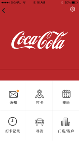
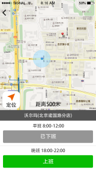

ABOUT ME
28岁，6年开发经验，Java项目起步，后从事前端Flex开发，基于兴趣投向IOS开发，现全面负责公司产品的IOS端。喜欢吸取各种知识，程序严谨逻辑清晰，热爱好的产品设计和美的事物，育有一女。
意向职位：IOS开发工程师 期望薪资：面议
28岁，6年开发经验，Java项目起步，后从事前端Flex开发，基于兴趣投向IOS开发，现全面负责公司产品的IOS端。喜欢吸取各种知识，程序严谨逻辑清晰，热爱好的产品设计和美的事物，育有一女。
意向职位：IOS开发工程师 期望薪资：面议
1.嗖嗖（全行业通用移动外勤系统）负责IOS手机端开发
部分截图展示：
 
企业版扫码安装（或点击安装）：

4.ITAS（快销行业销售终端管理系统）负责PC端Flex开发
部分截图展示：


5.STSS智慧景区服务系统（成功在北京园博会、青岛世园会使用）负责PC端Flex开发
部分截图展示：


6.移动云平台考勤管理系统（LG、亚马逊、阿里云等客户使用）负责PC端Flex开发
部分截图展示：


7.中国移动集中化网络性能管理-十大场景（Flex端主程）
8.中国移动综合监控系统（产品项目，负责其中区域监控系统Flex端开发）
9.BSC平衡计分卡系统（产品项目，使用JavaEE+html实现）
10.厦门船舶重工BI系统（Webfocus报表系统开发，Java+Flex实现财务模块展现）
11.沈阳电力Portal门户以及CMS系统（WebLogic Portal和JavaEE+html实现）